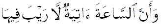
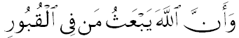
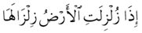
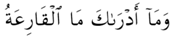
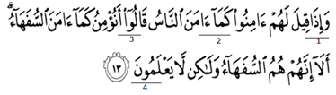

- Pada hari kiamat manusia akan dibangkitkan dari kubur dalam bentuk yang bermacam-macam sesuai dengan amal perbuatan ketika hidup di dunia.
Istilah yang tepat berkaitan dengan peristiwa tersebut dinamakan ....
- Yaumul Ba'ats
- Yaumul Mizan
- Yaumul Hisab
- Yaumul Barzah'
- Perhatikan kisah singkat perjuangan Rasulullah berikut!
Nabi Muhammad Saw dalam dakwahnya di Mekah senantiasa mendapat cobaan, ujian, gangguan dan rintangan, bahkan cemoohan dari orang-orang kafir quraisy.
Namun Nabi Muhammad Saw. tidak pernah putus asa ataupun membalas cemoohan mereka, beliau tetap tegar dan sabar dalam menghadapi ujian dan cobaan itu.
Pada kisah tersebut nilai yang dapat diteladani adalah.....
- jujur
- sabar
- amanah
- tawadhu'
- Perhatikan ilustrasi berikut!
Ketika manusia hidup di dunia ada yang berbuat baik dan buruk. Sekecil apapun perbuatan tersebut akan diperlihatkan balasannya oleh Allah SWTpada hari kiamat kelak.
Hal tersebut sesuai dengan firman Allah SWTdalam surat.....
- At-tiin
- Al-Zalzalah
- Al-Qoriah
- Al-Humazah
- Perhatikan pernyataan berikut!
- Orang yang sakit bisa sembuh asal mau berobat
- Orang bodoh bisa pintar asal rajin belajar dan berdo'a
- Orang miskin bisa jadi kaya asal mau berusaha dan bekerja keras
- Waktu terjadinya hari kiamat hanya Allah SWT yang mengetahuinya
- Bila sudah tiba ajalnya maka tidak bisa diminta untuk diundur dan dimajukan
Dari pernyataan diatas yang termasuk takdir mubrom ditunjukan pada nomor....
- 1 dan 2
- 2 dan 3
- 3 dan 4
- 4 dan 5
- Perhatikan wacana berikut!
Pada tanggal 30 Desember 2014 terjadi kecelakaan jatuhnya pesawat AIR ASIA yang menewaskan semua penumpangnya.
Sikap yang tepat sesuai dengan ajaran Islam adalah....
- Menganggap bahwa kejadian tersebut merupakan hukum alam.
- Meratapi kejadian tersebut sebagai sikap tidak menerima terhadap taqdir Allah SWT.
- Menerima dengan ikhlas bahwa peristiwa tersebut adalah bagian dari taqdir Allah SWT.
- Menyalahkan maskapai penerbangan yang tidak bisa menjaga keselamatan penumpang
- Perhatikan pernyataan dibawah ini !
- Makan/minum sambil berdiri
- Makan/minum sepuas-puasnya
- Makan/minum sambil berbicara
- Membaca doa’ sebelum makan/minum
- Makan/minum menggunakan tangan kanan
Sikap seorang muslim yang benar sesuai adab makan dan minum ditunjukkan oleh
nomor....
- 1 dan 2
- 2 dan 3
- 3 dan 4
- 4 dan 5
- Umar Cokro adalah salah seorang siswa SMP kelas IX.Dia memilki wajah yang ganteng dan anak orang kaya.
Dia hanya berteman dengan orang yang ganteng dan yang kaya saja; Dia juga suka menghina dan meremehkan
teman-temannya yang tidak ganteng dan tidak kaya.
Mengetahui Umar Cokro memiliki sifat yang demikian, maka sikap yang tepat sebagai sesama muslim adalah....
- Mengagumi ketampanan dan kekayaannya
- Menghindari berteman dengannya.
- Memberikan nasehat kepadanya
- Memanfaatkan kelebihan yang dimilikinya
- Perhatikan wacana berikut !
Arman adalah seorang ketua kelas pada salah satu SMP. Ketika terjadi suatu keributan di kelasnya ia tidak hanya mendengarkan pengaduan dari satu pihak,
namun ia juga mendengarkan pihak lain untuk mengetahui siapa yang salah dan kemudian mendengarkannya.
Sikap Arman tersebut sesuai dengan salah satu kandungan dalam surat At-Tiin, yaitu ....
- kejujuran
- keadilan
- kerja keras
- percaya dir
- Perhatikan pernyataan berikut!
- Dilaksanakan pada hari ketujuh
- Untuk laki-laki dua ekor kambing
- Dibagikan dalam bentuk daging mentah
- Orang tua yang aqiqah tidak boleh makan daging aqiqah
- Hewan aqiqah boleh diganti dengan ayam yang nilai harganya sama
Pernyataan tersebut, yang menunjukkan ketentuan aqiqah terdapat pada nomor....
- 1 dan 2
- 2 dan 3
- 3 dan 4
- 4 dan 5
- Setelah menemukan alat bukti yang sah dan mendengarkan keterangan beberapa saksi, hakim menjatuhkan vonis/hukuman seumur hidup
kepada terdakwa korupsi yang merugikan Negara. Keputusan hukum yang diambil oleh hakim sebagai cermin peneladanan asmaul husna....
- Al-Aziz
- Ar-Rahman
- Al-Adlu
- As-Salaam
- Pada hari kiamat terjadi manusia akan dibangkitkan dari alam kuburnya lalu mereka dikumpulkan di padang mahsyar dan akan dimintai pertanggung jawabannya.
Ayat yang sesuai dengan peristiwa tersebut adalah....
- 
- 
- 
- 
- Perhatikan pernyataan-pernyataan di bawah ini!
- Karena belajar yang giat setiap hari akhirnya ia lulus ujian dengan nilai yang baik.
- Ibu selalu mengontrol ke dokter untuk mengetahui perkembangan fisiknya karena ia ingin sembuh.
- Usman terlahir menjadi bangsa Indonesia, karena ayah ibu nya orang Indonesia juga.
- Pak hajiterbiasa tidak mengunci pintu rumahnya, karena ia yakin Allah SWT akan menjaganya dari gangguan orang jahat.
Pernyataan yang mencerminkan taqdir muallaq adalah....
- 1 dan 2
- 1 dan 3
- 2 dan 3
- 2 dan 4
- Faktor ekonomi yang menghimpit di tambah masalah keluarga yang selalu menerpa, seorang Ibu mengambil jalan pintas mengakhiri hidupnya dengan meminum racun serangga yang menyebabkan jiwanya melayang.
Berdasarkan kasus tersebut, sikap kita berkaitan dengan mengimani takdir adalah....
- Ibu tersebut belum mengimani takdir dengan baik.
- Tindakan ibu tersebut sudah tepat dalam mengambil keputusan.
- Ibu itu tahu kehidupan di alam baqa lebih menjajikan.
- Ibu itu bangga dengan perbuatan dalam menyelesaikan masalah.
- Sifat munafiq/nifak termasuk sifat tercela yang dilarang Allah SWT. Diantara bahaya sifat nifak secara langsung bagi pelakunya yaitu ....
- hilang kepercayaan orang lain
- menjadikan dirinya bodoh
- menyebabkan kemiskinan
- merugikan orang lain
- Perhatikan bacaan mad pada ayat berikut!

Bacaan Mad Wajib Muthashil terdapat pada lafal bergaris bawah dengan nomor....
- 1
- 2
- 3
- 4
- Setelah lulus Ujian Nasional, Fahri merasa sangat bahagia. Menyadari bahwa itu adalah karunia dari Allah SWT.maka ia segera melakukan sujud.
Sujud yang dilakukan oleh Fahri tersebut disebut....
- Sujud Tilawah
- Sujud Syukur
- Sujud Sahwi
- Sujud Rukun Shalat
- Puasa sunah memiliki berbagai manfaat sebagaimana diungkapkan oleh Rasulullah SAW. dalam haditnya, antara lain....
- menyehatkan, mengendalikan nafsu, masuk sorga
- menghemat, meningkatkan kesabaran, menguatkan
- menambah rezeki, memperbanyak persaudaraan
- memperoleh pujian, mendapatkan ridla Allah SWT.
- Pak Wido memiliki seorang istri dengan empat anak usia sekolah. Mereka tinggal di gubuk liar yang dibangun dari kayu dan kardus bekas di pinggir sungai.
Pekerjaannya serabutan,terkadang ada pekerjaan terkadang menganggur. Setiap bekerja penghasilannya selalu tidak mencukupi kebutuhan di hari itu.
Dalam kondisi semacam itu, Pak Wido berhak memperoleh zakat, karena....
- Gharim
- Muallaf
- Miskin
- Fakir
- Salah satu amalan dalam melakukan ibadah haji adalah hadir di Padang Arafah pada waktu yang ditentukan,
yaitu mulai waktu Zuhur pada 9 Dzulhijah sampai dengan terbit fajar tanggal 10 Dzulhijah. Amalan tersebut dinamakan....
- Ihram
- Wukuf
- Tawaf
- Sa'i
- Ahmad melakukan ibadah haji. Ketika baru sampai di Masjidil Haram, ia melakukan thawaf. Thawaf yang dilakukan oleh Ahmad dinamakan tawaf....
- Qudum
- Tahalul
- Wada'
- Nazar
- Setelah lulus SMP, Husain ingin melanjutkan ke sekolah yang lebih tinggi. Dari Nilai Ujian Nasional yang diperoleh,
peluang Husain untuk masuk ke SMA atau SMK Negeri cukup tinggi. Akan tetapi Husain masih ragu dalam menentukan pilihan antara melanjutkan ke SMA atau SMK.
Dalam kondisi seperti ini, Husain perlu memohon petunjuk dari Allah SWT dengan melakukan salat sunah....
- Hajat
- Khusuf
- Istikharah
- Istisqa
- Ketika di Madinah, Nabi Muhammad SAW selalu mengontrol timbangan para pedagang di pasar.
Beliau juga mengingatkan para pedagang untuk tidak berlaku curang terhadap para pembeli.
Para pedagang pun menyambut hal ini dengan lapang dada dan mengikutinya.
Ilustrasi tersebutmenggambarkan sifat keteladanan nabi yaitu....
- Bijaksana
- Ramah
- Adil
- Jujur
- Perkembangan Ilmu pengetahuan pada masa Abbasyiah sangat pesat, sekolah-sekolah didirikan,
termasuk perguruan tinggipun berdiri di Baghdad, para ilmuwan bermunculan.
Berdasarkan ilustrasi di atas nilai yang dapat kita teladani dan dikembangkan adalah ...
- semangat mencari ilmu
- mencari kejayaan dunia
- memajukan bangsa
- memajukan teknologi
- Masuknya Islam ke Indonesia berlangsung secara damai tanpa ada kekerasan.
Penduduk pada saat itu menerima Islam dengan suka rela, terutama di daerah pesisir karena mereka
diajarkan bagaimana mencari nafkah yang halal dan yang membeli barang dengan alat tukar berupa uang.
Narasi tersebut menunjukkan bahwa masuknya Islam ke Nusantara melalui ....
- peperangan
- pertanaian
- perdagangan
- pendidikan
- Sultan Agung merupakan Raja Mataram yang sangat gigih dalam berdakwah dan menentang penjajahan asing.
Melihat kedatangan orang-orang Belanda di Batavia, maka Beliau mengirim ekspedisi pasukan perang dari Mataram untuk mengusir penjajah Belanda sampai dua kali.
Yang kita teladani dari sikap Sultan Agung tersebut adalah....
- Kerjasama sangat membantu keberhasilan dakwah.
- Pantang menyerah dalam berjuang.
- Kebencian terhadap bangsa Asing.
- Semangat berperang dan memperluas wilayah.
- Tradisi melaksanakan do'a bersama setelah mengkhitan anak, sering kita jumpai di tengah masyarakat bangsa kita.
Hal yang dapat kita teladani dari tradisi tersebut adalah ...
- ungkapan rasa syukur pada Allah SWT.
- adanya kebanggan atas anak tersebut.
- tanda senang anaknya telah dikhitan
- melestarikan budaya para leluhur